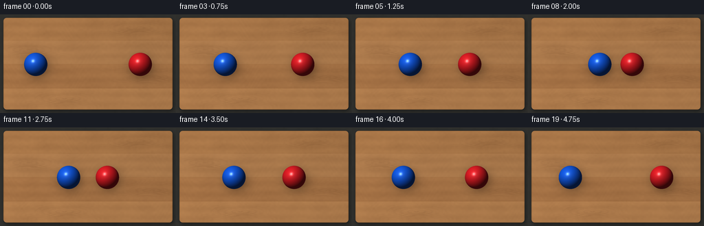
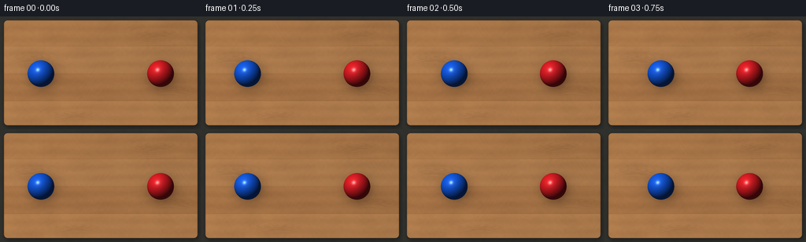

CODING AGENTS AS PIXEL WORLD MODELS
traex/GPT-6.1-Sol · instance_preservation_0025
点击播放 · 原生 RGB 像素
逐轮保存的候选
回放视频、检查图与代码变化。
每份候选均可单独播放。实际图片检查记录在下方工具轨迹中。
候选 01播放与检查图
点击播放 · 原生 RGB 像素


展开代码变化
--- 上一保存版本
+++ 本次保存版本
@@ -0,0 +1,123 @@
+from pathlib import Path
+import json
+import numpy as np
+from PIL import Image, ImageFilter
+import artifact_io
+
+ROOT = Path(__file__).resolve().parent
+SPEC = json.loads((ROOT / 'task_spec.json').read_text())
+W, H = SPEC['width'], SPEC['height']
+S = 4
+rng = np.random.default_rng(92117)
+y, x = np.mgrid[0:H*S, 0:W*S].astype(np.float64)
+x = (x + .5) / S
+y = (y + .5) / S
+
+# An orthographic, directly overhead composition. All texture is fixed in world space.
+def soft_noise(w, h, scale, amplitude):
+ nw, nh = max(2, int(w/scale)), max(2, int(h/scale))
+ a = rng.integers(0, 256, (nh, nw), dtype=np.uint8)
+ p = Image.fromarray(a).resize((w, h), Image.Resampling.BICUBIC)
+ return (np.asarray(p, dtype=float) / 255 - .5) * amplitude
+
+back = np.zeros((H*S, W*S, 3), dtype=float)
+back[:] = [48, 48, 45]
+back += soft_noise(W*S, H*S, 20, 2)[..., None]
+
+# Table silhouette, a thin round-over, and restrained shadow on the neutral floor.
+def rounded_rect(left, top, right, bottom, radius):
+ cx = np.clip(x, left+radius, right-radius)
+ cy = np.clip(y, top+radius, bottom-radius)
+ return np.hypot(x-cx, y-cy) <= radius
+
+mask = rounded_rect(5, 5, 251, 139, 5)
+shadow = Image.fromarray((rounded_rect(6, 7, 253, 142, 5)*180).astype(np.uint8))
+shadow = np.asarray(shadow.filter(ImageFilter.GaussianBlur(2.5*S)), float)/255
+back *= 1 - .5*shadow[..., None]
+
+wood = np.zeros_like(back)
+plank_edges = [5, 38, 73, 108, 139]
+colors = [[164, 115, 70], [169, 120, 75], [162, 112, 68], [174, 123, 76]]
+low = soft_noise(W*S, H*S, 70, 7)
+medium = soft_noise(W*S, H*S, 12, 3)
+for j, (lo, hi) in enumerate(zip(plank_edges[:-1], plank_edges[1:])):
+ sel = (y >= lo) & (y < hi)
+ # Flowing longitudinal fibres, with a small naturally elongated knot.
+ yy = y-lo
+ phase = yy + .67*np.sin(x/29+j*1.3) + .30*np.sin(x/10.7+j)
+ knot_x, knot_y = [(197,20), (42,52), (221,92), (94,123)][j]
+ kdist = np.sqrt(((x-knot_x)/4.5)**2 + (y-knot_y)**2)
+ influence = np.exp(-(((x-knot_x)/39)**2 + ((y-knot_y)/9)**2))
+ phase += influence * (2.5*np.sin(kdist*.45) + 1.8)
+ grain = 2.7*np.sin(phase*4.6 + .6*np.sin(x/31))
+ grain += 1.25*np.sin(phase*11.5 + np.sin(x/17))
+ grain += .65*np.sin(phase*25.9 + x/18)
+ pores = np.maximum(0, np.sin(phase*7.4+.9*np.sin(x/23))-.85)**2 * -70
+ broad = 3*np.sin(phase*.44+x*.004)
+ tone = low + medium + broad + grain + pores
+ tone -= influence * (4 + 4*np.maximum(0,np.sin(kdist*2.8)))
+ fine = rng.normal(0, .48, x.shape)
+ plank = np.array(colors[j], float)[None,None,:] + (tone+fine)[...,None]*np.array([1,.83,.59])
+ wood[sel] = plank[sel]
+# Hairline joins, never thick dark outlines.
+for seam in plank_edges[1:-1]:
+ wood -= (11*np.exp(-((y-seam)/.22)**2))[...,None]
+ wood += (4*np.exp(-((y-seam-.43)/.27)**2))[...,None]
+# Soft upper-left window light and gentle bevel at the rectangular tabletop perimeter.
+illum = 1.04 - .055*x/W - .035*y/H
+wood *= illum[...,None]
+edge_distance = np.minimum.reduce([x-5, 251-x, y-5, 139-y])
+wood -= (17*np.exp(-np.maximum(edge_distance,0)/.7))[...,None]
+wood += (4*np.exp(-((y-6)/.7)**2))[...,None]
+back[mask] = wood[mask]
+
+R = 17.0
+light = np.array([-.44, -.54, .72]); light /= np.linalg.norm(light)
+halfway = light + np.array([0,0,1.]); halfway /= np.linalg.norm(halfway)
+
+def add_ball(canvas, cx, cy, base_color):
+ # Diffuse floor occlusion, broad cast shadow, and a close contact shadow.
+ dx, dy = x-cx, y-cy
+ cast = np.exp(-(((dx-3.8)/18.3)**2 + ((dy-5.5)/17.0)**2)*1.25)
+ cast *= .32
+ contact = .24*np.exp(-((dx/17.7)**2+(dy/17.7)**2)*2.0)
+ canvas *= (1-np.minimum(.53,cast+contact))[...,None]
+ inside = dx*dx+dy*dy < R*R
+ nx, ny = dx/R, dy/R
+ nz = np.sqrt(np.clip(1-nx*nx-ny*ny,0,1))
+ nlight = np.maximum(0,nx*light[0]+ny*light[1]+nz*light[2])
+ diffuse = .22+.77*nlight
+ color = np.array(base_color)[None,None,:]*diffuse[...,None]
+ # Warm tabletop bounce around the underside of the otherwise saturated sphere.
+ bounce = .035*(1-nz)*np.maximum(ny,0)
+ color += bounce[...,None]*np.array([160,104,52])
+ ndh = np.maximum(0,nx*halfway[0]+ny*halfway[1]+nz*halfway[2])
+ sheen = 22*ndh**15 + 137*ndh**115
+ color += sheen[...,None]*np.array([1,.99,.94])
+ # A faint secondary broad reflection gives a solid polished-plastic surface.
+ rim = 5*(1-nz)**3*(.5+.5*np.maximum(-ny,0))
+ color += rim[...,None]*np.array([.70,.80,1.])
+ canvas[inside] = color[inside]
+
+frames = []
+centers = []
+for i in range(SPEC['frames']):
+ # Two equal-size balls meet at frame 9 and exchange velocities.
+ # Their order and distinct red/blue identity are preserved throughout.
+ if i <= 9:
+ left = 52 + (111-52)*i/9
+ else:
+ dt = (i-9)/SPEC['fps']
+ left = 111 - 23*dt + 1.3*dt*dt # mild rolling friction after impact
+ right = W-left
+ canvas = back.copy()
+ add_ball(canvas, left, 73.0, [19, 91, 231])
+ add_ball(canvas, right, 73.0, [227, 29, 37])
+ image = Image.fromarray(np.uint8(np.clip(canvas,0,255))).resize((W,H),Image.Resampling.LANCZOS)
+ frames.append(np.asarray(image))
+ centers.append([float(left),float(right)])
+
+frames = np.stack(frames).astype(np.uint8)
+artifact_io.save(frames, ROOT)
+print(f'Saved {len(frames)} RGB frames, {W}x{H}, {SPEC["fps"]} fps.')
+print('Horizontal centers at start, contact and finish:', centers[0], centers[9], centers[-1])
可观测工具轨迹
实际执行的命令与返回图片。
命令 1exit 0
/bin/bash -lc 'ls -la && cat prompt.txt && cat GENERATION_RULES.md && cat task_spec.json'
命令 2exit 0
/bin/bash -lc 'cat artifact_io.py'
命令 3exit 0
/bin/bash -lc "cat > generate.py <<'PY'
from pathlib import Path
import json
import numpy as np
from PIL import Image, ImageFilter
import artifact_io
ROOT = Path(__file__).resolve().parent
SPEC = json.loads((ROOT / 'task_spec.json').read_text())
W, H = SPEC['width'], SPEC['height']
S = 4
rng = np.random.default_rng(92117)
y, x = np.mgrid[0:H*S, 0:W*S].astype(np.float64)
x = (x + .5) / S
y = (y + .5) / S
# An orthographic, directly overhead composition. All texture is fixed in world space.
def soft_noise(w, h, scale, amplitude):
nw, nh = max(2, int(w/scale)), max(2, int(h/scale))
a = rng.integers(0, 256, (nh, nw), dtype=np.uint8)
p = Image.fromarray(a).resize((w, h), Image.Resampling.BICUBIC)
return (np.asarray(p, dtype=float) / 255 - .5) * amplitude
back = np.zeros((H*S, W*S, 3), dtype=float)
back[:] = [48, 48, 45]
back += soft_noise(W*S, H*S, 20, 2)[..., None]
# Table silhouette, a thin round-over, and restrained shadow on the neutral floor.
def rounded_rect(left, top, right, bottom, radius):
cx = np.clip(x, left+radius, right-radius)
cy = np.clip(y, top+radius, bottom-radius)
return np.hypot(x-cx, y-cy) <= radius
mask = rounded_rect(5, 5, 251, 139, 5)
shadow = Image.fromarray((rounded_rect(6, 7, 253, 142, 5)*180).astype(np.uint8))
shadow = np.asarray(shadow.filter(ImageFilter.GaussianBlur(2.5*S)), float)/255
back *= 1 - .5*shadow[..., None]
wood = np.zeros_like(back)
plank_edges = [5, 38, 73, 108, 139]
colors = [[164, 115, 70], [169, 120, 75], [162, 112, 68], [174, 123, 76]]
low = soft_noise(W*S, H*S, 70, 7)
medium = soft_noise(W*S, H*S, 12, 3)
for j, (lo, hi) in enumerate(zip(plank_edges[:-1], plank_edges[1:])):
sel = (y >= lo) & (y < hi)
# Flowing longitudinal fibres, with a small naturally elongated knot.
yy = y-lo
phase = yy + .67*np.sin(x/29+j*1.3) + .30*np.sin(x/10.7+j)
knot_x, knot_y = [(197,20), (42,52), (221,92), (94,123)][j]
kdist = np.sqrt(((x-knot_x)/4.5)**2 + (y-knot_y)**2)
influence = np.exp(-(((x-knot_x)/39)**2 + ((y-knot_y)/9)**2))
phase += influence * (2.5*np.sin(kdist*.45) + 1.8)
grain = 2.7*np.sin(phase*4.6 + .6*np.sin(x/31))
grain += 1.25*np.sin(phase*11.5 + np.sin(x/17))
grain += .65*np.sin(phase*25.9 + x/18)
pores = np.maximum(0, np.sin(phase*7.4+.9*np.sin(x/23))-.85)**2 * -70
broad = 3*np.sin(phase*.44+x*.004)
tone = low + medium + broad + grain + pores
tone -= influence * (4 + 4*np.maximum(0,np.sin(kdist*2.8)))
fine = rng.normal(0, .48, x.shape)
plank = np.array(colors[j], float)[None,None,:] + (tone+fine)[...,None]*np.array([1,.83,.59])
wood[sel] = plank[sel]
# Hairline joins, never thick dark outlines.
for seam in plank_edges[1:-1]:
wood -= (11*np.exp(-((y-seam)/.22)**2))[...,None]
wood += (4*np.exp(-((y-seam-.43)/.27)**2))[...,None]
# Soft upper-left window light and gentle bevel at the rectangular tabletop perimeter.
illum = 1.04 - .055*x/W - .035*y/H
wood *= illum[...,None]
edge_distance = np.minimum.reduce([x-5, 251-x, y-5, 139-y])
wood -= (17*np.exp(-np.maximum(edge_distance,0)/.7))[...,None]
wood += (4*np.exp(-((y-6)/.7)**2))[...,None]
back[mask] = wood[mask]
R = 17.0
light = np.array([-.44, -.54, .72]); light /= np.linalg.norm(light)
halfway = light + np.array([0,0,1.]); halfway /= np.linalg.norm(halfway)
def add_ball(canvas, cx, cy, base_color):
# Diffuse floor occlusion, broad cast shadow, and a close contact shadow.
dx, dy = x-cx, y-cy
cast = np.exp(-(((dx-3.8)/18.3)**2 + ((dy-5.5)/17.0)**2)*1.25)
cast *= .32
contact = .24*np.exp(-((dx/17.7)**2+(dy/17.7)**2)*2.0)
canvas *= (1-np.minimum(.53,cast+contact))[...,None]
inside = dx*dx+dy*dy < R*R
nx, ny = dx/R, dy/R
nz = np.sqrt(np.clip(1-nx*nx-ny*ny,0,1))
nlight = np.maximum(0,nx*light[0]+ny*light[1]+nz*light[2])
diffuse = .22+.77*nlight
color = np.array(base_color)[None,None,:]*diffuse[...,None]
# Warm tabletop bounce around the underside of the otherwise saturated sphere.
bounce = .035*(1-nz)*np.maximum(ny,0)
color += bounce[...,None]*np.array([160,104,52])
ndh = np.maximum(0,nx*halfway[0]+ny*halfway[1]+nz*halfway[2])
sheen = 22*ndh**15 + 137*ndh**115
color += sheen[...,None]*np.array([1,.99,.94])
# A faint secondary broad reflection gives a solid polished-plastic surface.
rim = 5*(1-nz)**3*(.5+.5*np.maximum(-ny,0))
color += rim[...,None]*np.array([.70,.80,1.])
canvas[inside] = color[inside]
frames = []
centers = []
for i in range(SPEC['frames']):
# Two equal-size balls meet at frame 9 and exchange velocities.
# Their order and distinct red/blue identity are preserved throughout.
if i <= 9:
left = 52 + (111-52)*i/9
else:
dt = (i-9)/SPEC['fps']
left = 111 - 23*dt + 1.3*dt*dt # mild rolling friction after impact
right = W-left
canvas = back.copy()
add_ball(canvas, left, 73.0, [19, 91, 231])
add_ball(canvas, right, 73.0, [227, 29, 37])
image = Image.fromarray(np.uint8(np.clip(canvas,0,255))).resize((W,H),Image.Resampling.LANCZOS)
frames.append(np.asarray(image))
centers.append([float(left),float(right)])
frames = np.stack(frames).astype(np.uint8)
artifact_io.save(frames, ROOT)
print(f'Saved {len(frames)} RGB frames, {W}x{H}, {SPEC[\"fps\"]} fps.')
print('Horizontal centers at start, contact and finish:', centers[0], centers[9], centers[-1])
PY
python generate.py
ls -lh pixels.npz index.html inspection.png frames/00.png frames/19.png"保存候选 1 份；完成命令 3 次；可验证图片返回 0 张。原始 API 响应与完整日志保留在本地。